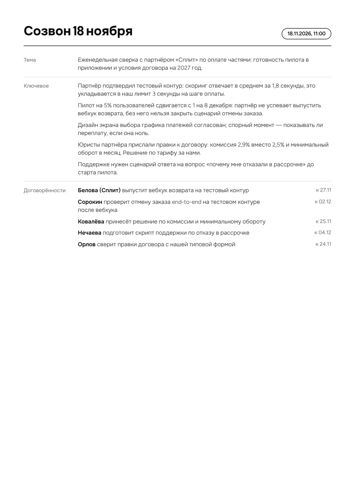
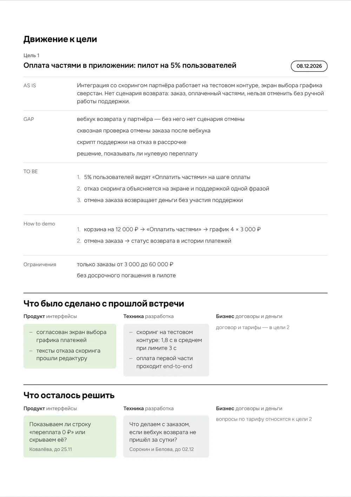
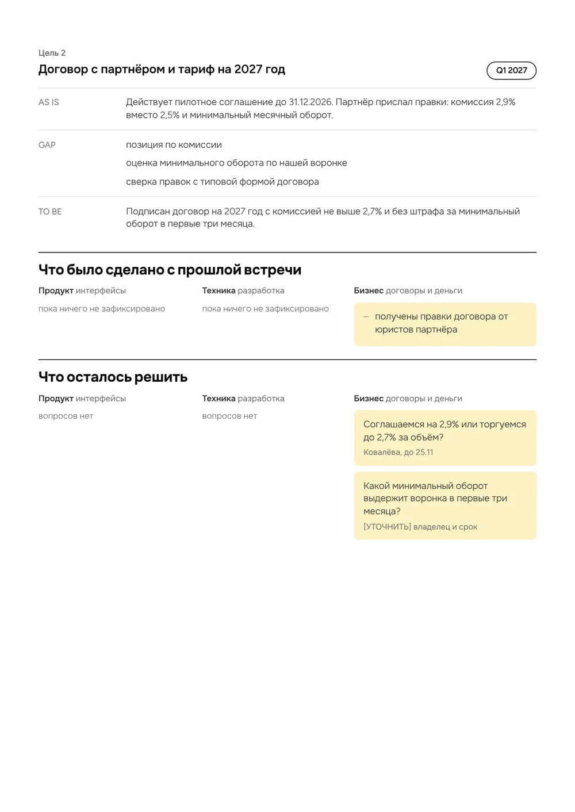
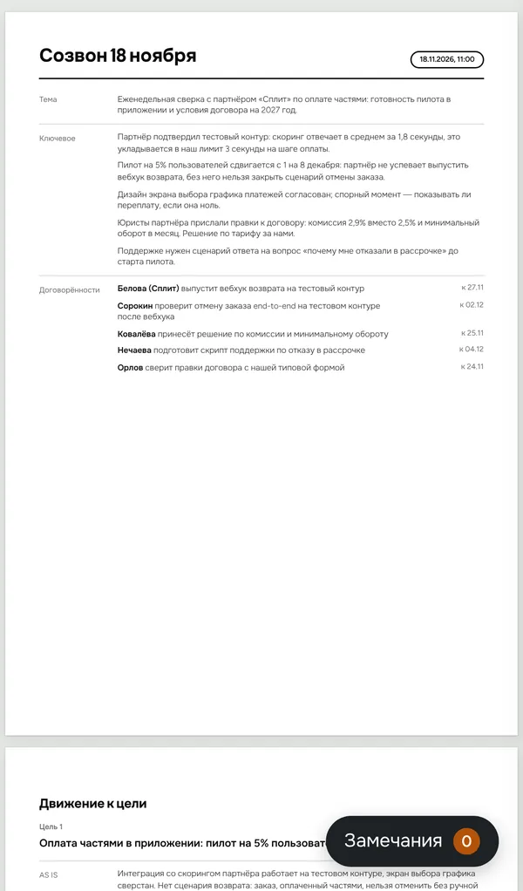
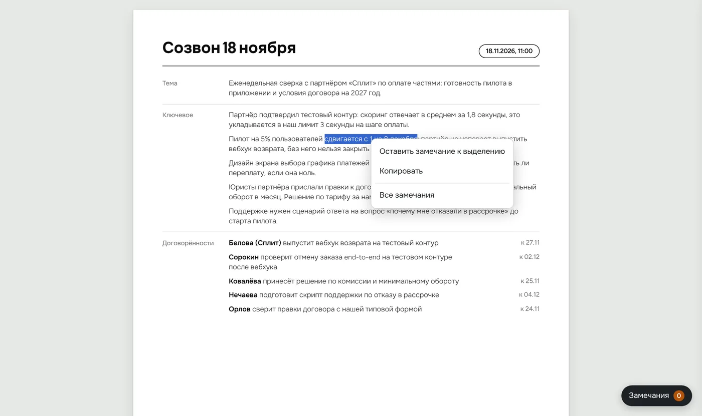

📞
Созвонылента · 18.11, 11:47
Созвон «Сплит · оплата частями» · 11:00–11:46 · 6 участниковСОЗВОНЫ · ИИ-АГЕНТ · ДВИЖЕНИЕ К ЦЕЛЯМ
Агент не пересказывает расшифровку. Через несколько минут после созвона он присылает PDF: как услышанное меняет картину моих целей.
Не «о чём говорили»,
а «что это значит для цели».
Проблема
Сорок минут разговора — десятки страниц текста. Чтобы найти в нём решение, его надо перечитать.
Темы встречи. Но не связь с целями квартала и не то, что изменилось с прошлого раза.
Что сдвинулось, что сломалось, кто что обещал и к какому сроку, какое решение теперь за мной.
Созвонов за день — несколько. Перечитывать расшифровки некогда, а держать в голове, как каждый из них двигает цели, — невозможно.
Разница
Как устроено
Платформа готовит расшифровку и свою сводку.
В ветке — полная расшифровка и сводка файлами .txt. Агенту — задача на доске.
Читает расшифровку целиком и прошлую встречу серии, раскладывает по целям.
Галерея листов в ветке поста, push в мессенджер, файлы HTML и PDF.
Ноль выдумки: цифры, даты, фамилии и сроки — только из расшифровки, фамилии сверены по глоссарию. Сводка платформы — подсказка, верна расшифровка.
Документ · лист 1

Лист 1 · демо-данные
Документ · главное

Цель 1 · срок плашкой
Документ · прогресс

Цель 2 · вопросы с владельцем и сроком
Серия встреч
Еженедельный созвон с партнёром перестаёт быть «опять поговорили»: видно, что сдвинулось за неделю и что висит третью встречу подряд.
Интерфейс · PDF
Цель всегда начинается с нового листа, блоки не режутся. Открыть PDF ↗
Интерфейс · лента и мессенджер
Схема по реальным сообщениям · демо-данные

Тот же документ на телефоне
Правки

Или ответить в треде push-сообщения: «🛠 Взял в работу» — и в треде появляется документ v2. Агент правит только названное.
Попробуйте сами
Документ собран настоящим навыком из вымышленного созвона: партнёр, люди и цифры придуманы.
Что дальше происходит с рефлексией
PO-агенты читают рефлексии созвонов за три дня: договорённость с партнёром попадает в их картину цели уже наутро.
«Кто — что — срок» уходит в очередь памяти организации. Фактом становится только после моего «принять».
Встречи один на один и личные темы в память организации не попадают. Здоровье и болтовня до начала — не попадают в документ.
Как агенты команд используют рефлексии созвонов: Рефлексия ИИ-агентов →
Честно о слабых местах
Плохой звук и перебивания дают «[УТОЧНИТЬ]» там, где человек бы догадался. Это честнее, но требует моей правки.
Если цель на встрече не назвали, агент её не придумает. Первая встреча новой серии — без «что сделано».
Расшифровка у платформы готова через 5–30 минут после конца созвона, документ — ещё через несколько минут.
Замечания уходят агенту, и он собирает v2. Пока v2 в работе, новые замечания ждут v3.
Агент слушает за меня не ради конспекта. Он отвечает на один вопрос: что эта встреча изменила в движении к цели — и что теперь решать мне.
github.com/po-helper-org/call-reflection-skills 🔒